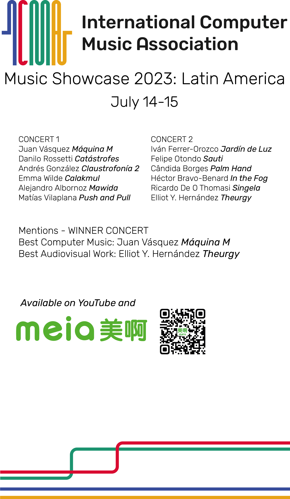

ICMA Music Showcase 2023: América Latina
A International Computer Music Association (ICMA) apresenta o ICMA Music Showcase 2023: América Latina. Os membros do ICMA nascidos ou residentes na América Latina foram convidados a enviar peças para uma série de concertos online de 14 a 15 de julho de 2023. Esta é a seleção de obras.

Concerto dos laureados
Concerto I
Concerto II